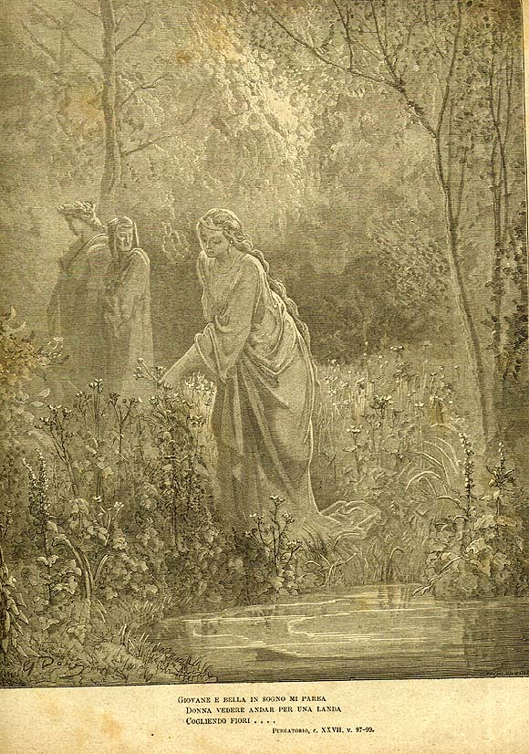

Песнь 27 из 33
Огненная стена. Прощание Вергилия

Кратко
Ангел возвещает: пройти дальше можно лишь сквозь огонь. Данте цепенеет от ужаса, но Вергилий напоминает, что по ту сторону пламени — Беатриче, и поэт решается войти; огонь оказывается терпим. На ступенях их застаёт ночь, и Данте снится Лия, собирающая цветы, и Рахиль перед зеркалом — образы жизни деятельной и созерцательной. На рассвете Вергилий произносит последнее слово: воля Данте теперь «свободна, пряма и здрава», он сам себе господин — «венчаю и митрую тебя над тобою самим» — и умолкает навсегда.
Главные моменты
- Испытание огнём: страх побеждён мыслью о Беатриче.
- Сон о Лии и Рахили — деятельная и созерцательная жизнь.
- Прощальное напутствие Вергилия: «te sovra te corono e mitrio».
- Стёрто последнее «P»: Данте очищен и свободен, разум сделал своё дело.
Значение
Завершение очищения: разум (Вергилий) довёл до предела своих сил — дальше ведут воля и благодать.